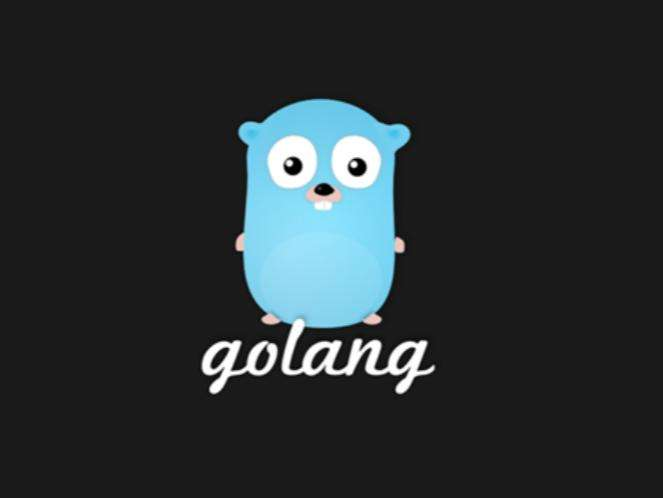

<!DOCTYPE html><html><head><meta charset="utf-8"><title>什么是GO语言？为什么GO语言是最有潜力的编程语言 | 技术学派</title><meta name="viewport" content="width=device-width,initial-scale=1,maximum-scale=1"><meta name="keywords" content="IT培训, Python, 大数据, 人工智能, Web前端, PHP, go"><meta name="description" content="随着时代发展，编程语言种类越来越繁多，老牌强将势头仍然强劲，不过也很难抵挡住新兴编程语言的实力和发展。GO语言就是这样一个年纪很小的实力新星。Go语言是谷歌2009发布的第二款开源编程语言。Go语言专门针对多处理器系统应用程序的编程进行了优化，使用Go编译的程序可以媲美C或C++代码的速度，而且更加安全、支持并行进程。Go语言的目标是希望提升现有编程语言对程序库等依赖性(dependency)的管"><meta name="keywords" content="go"><meta property="og:type" content="article"><meta property="og:title" content="什么是GO语言？为什么GO语言是最有潜力的编程语言"><meta property="og:url" content="http://www.JiShuXuePai.com/blog/学习答疑/学习答疑/什么是GO语言？为什么GO语言是最有潜力的编程语言？/index.html"><meta property="og:site_name" content="技术学派"><meta property="og:description" content="随着时代发展，编程语言种类越来越繁多，老牌强将势头仍然强劲，不过也很难抵挡住新兴编程语言的实力和发展。GO语言就是这样一个年纪很小的实力新星。Go语言是谷歌2009发布的第二款开源编程语言。Go语言专门针对多处理器系统应用程序的编程进行了优化，使用Go编译的程序可以媲美C或C++代码的速度，而且更加安全、支持并行进程。Go语言的目标是希望提升现有编程语言对程序库等依赖性(dependency)的管"><meta property="og:locale" content="zh-CN"><meta property="og:image" content="http://www.jishuxuepai.com/blog/学习答疑/学习答疑/什么是GO语言？为什么GO语言是最有潜力的编程语言？/01.jpg"><meta property="og:updated_time" content="2018-07-03T01:13:08.000Z"><meta name="twitter:card" content="summary"><meta name="twitter:title" content="什么是GO语言？为什么GO语言是最有潜力的编程语言"><meta name="twitter:description" content="随着时代发展，编程语言种类越来越繁多，老牌强将势头仍然强劲，不过也很难抵挡住新兴编程语言的实力和发展。GO语言就是这样一个年纪很小的实力新星。Go语言是谷歌2009发布的第二款开源编程语言。Go语言专门针对多处理器系统应用程序的编程进行了优化，使用Go编译的程序可以媲美C或C++代码的速度，而且更加安全、支持并行进程。Go语言的目标是希望提升现有编程语言对程序库等依赖性(dependency)的管"><meta name="twitter:image" content="http://www.jishuxuepai.com/blog/学习答疑/学习答疑/什么是GO语言？为什么GO语言是最有潜力的编程语言？/01.jpg"><link rel="stylesheet" href="/libs/bootstrap/bootstrap-grid.css"><link rel="stylesheet" href="/libs/font-awesome/css/font-awesome.min.css"><link rel="stylesheet" href="/libs/titillium-web/styles.css"><link rel="stylesheet" href="/libs/source-code-pro/styles.css"><link rel="stylesheet" href="/css/style.css"><script src="/libs/jquery/jquery.min.js"></script><link rel="stylesheet" href="/libs/lightgallery/css/lightgallery.min.css"><link rel="stylesheet" href="/libs/justified-gallery/justifiedGallery.min.css"><script>var _hmt=_hmt||[];!function(){var e=document.createElement("script");e.src="//hm.baidu.com/hm.js?4c1bd812de3c30edbaa2b803c66f0a04";var t=document.getElementsByTagName("script")[0];t.parentNode.insertBefore(e,t)}()</script></head></html><body><div id="wrap"><header id="header"><div id="header-outer" class="outer"><div class="container"><div class="container-inner"><div id="header-title"><h1 class="logo-wrap"><a href="/" class="logo"></a></h1></div><div id="header-inner" class="nav-container"><a id="main-nav-toggle" class="nav-icon fa fa-bars">菜单</a><div class="nav-container-inner"><ul id="main-nav"><li class="main-nav-list-item"><a class="main-nav-list-link" href="/">主页</a></li><li class="main-nav-list-item"><a class="main-nav-list-link" href="/edu/index.html">学编程</a></li><li class="main-nav-list-item"><a class="main-nav-list-link" href="/blog/">博客</a></li><li class="main-nav-list-item"><a class="main-nav-list-link" href="/tips.html">学习建议</a></li><li class="main-nav-list-item"><a class="main-nav-list-link" href="/about.html">关于</a></li></ul><nav id="sub-nav"><div id="search-form-wrap"><form class="search-form"><input type="text" class="ins-search-input search-form-input" placeholder="搜索"> <button type="submit" class="search-form-submit"></button></form><div class="ins-search"><div class="ins-search-mask"></div><div class="ins-search-container"><div class="ins-input-wrapper"><input type="text" class="ins-search-input" placeholder="想要查找什么..."> <span class="ins-close ins-selectable"><i class="fa fa-times-circle"></i></span></div><div class="ins-section-wrapper"><div class="ins-section-container"></div></div></div></div><script>window.INSIGHT_CONFIG={TRANSLATION:{POSTS:"文章",PAGES:"页面",CATEGORIES:"分类",TAGS:"标签",UNTITLED:"(未命名)"},ROOT_URL:"/",CONTENT_URL:"/content.json"}</script><script src="/js/insight.js"></script></div></nav></div></div></div></div></div></header><div class="container"><div class="main-body container-inner"><div class="main-body-inner"><section id="main"><div class="main-body-header"><h1 class="header"><a class="page-title-link" href="/categories/学习答疑/">学习答疑</a><div class="author"></div></h1></div><div class="main-body-content"><article id="post-学习答疑/什么是GO语言？为什么GO语言是最有潜力的编程语言？" class="article article-single article-type-post" itemscope itemprop="blogPost"><div class="article-inner"><header class="article-header"><h1 class="article-title" itemprop="name">什么是GO语言？为什么GO语言是最有潜力的编程语言</h1></header><div class="article-meta"><div class="article-date"><a href="/blog/学习答疑/学习答疑/什么是GO语言？为什么GO语言是最有潜力的编程语言？/" class="article-date"><time datetime="2018-07-02T03:21:58.000Z" itemprop="datePublished">2018-07-02</time></a></div><div class="article-tag"><i class="fa fa-tag"></i> <a class="tag-link" href="/tags/go/">go</a></div></div><div class="article-entry" itemprop="articleBody"><p>随着时代发展，编程语言种类越来越繁多，老牌强将势头仍然强劲，不过也很难抵挡住新兴编程语言的实力和发展。GO语言就是这样一个年纪很小的实力新星。</p><p>Go语言是谷歌2009发布的第二款开源编程语言。Go语言专门针对多处理器系统应用程序的编程进行了优化，使用Go编译的程序可以媲美C或C++代码的速度，而且更加安全、支持并行进程。</p><p>Go语言的目标是希望提升现有编程语言对程序库等依赖性(dependency)的管理，这些软件元素会被应用程序反复调用。由于存在并行编程模式，因此这一语言也被设计用来解决多处理器的任务。</p><p>GO语言目前的用户群体暂时并不大，不过用过的人对其评价很高，那我们来看看什么是GO语言吧。</p><h3 id="0-什么是GO？"><a href="#0-什么是GO？" class="headerlink" title="0.什么是GO？"></a>0.什么是GO？</h3><p>Golang （GO）是由Google在2009年推出的编程语言，是一门全新的、现代的、语法简洁并容易上手的编程语言，是具备独立的运行时库，就像C语言一样。</p><p>曾协助实现 Java 的 HotSpot 编译器和 JavaScript V8 引擎的Robert Griesemer，曾是贝尔实验室的 Unix 团队和 Plan9 操作系统成员，与 Thompson 一起创造了 UTF-8 字符编码的Rob Pike 以及技术圣殿的人物，创造了 C 语言和 Unix，获得了 1983 年图灵奖和 1988 国家技术奖的Ken Thompson。</p><p>据说这些大神们创建 Go 语言的初衷是：近十年来开发程序之难让我们有点沮丧。于是 Go 诞生了。</p><p></p><h3 id="1-GO的优势？"><a href="#1-GO的优势？" class="headerlink" title="1.GO的优势？"></a>1.GO的优势？</h3><p>可直接编译成机器码，不依赖其他库，glibc的版本有一定要求，部署就是扔一个文件上去就完成了。</p><p>静态类型语言，但是有动态语言的感觉，静态类型的语言就是可以在编译的时候检查出来隐藏的大多数问题，动态语言的感觉就是有很多的包可以使用，写起来的效率很高。</p><p>语言层面支持并发，这个就是Go语言最大的特色，天生的支持并发，天生的基因和整容是有区别的，大家一样美丽，但是你喜欢整容的还是天生基因的美丽呢？Go语言就是基因里面支持的并发，可以充分的利用多核，很容易的使用并发。</p><p>内置runtime，支持垃圾回收，这属于动态语言的特性之一吧，虽然目前来说GC不算完美，但是足以应付我们所能遇到的大多数情况，特别是Go1.1之后的GC。</p><p></p><h3 id="2-GO语言适合用来做什么"><a href="#2-GO语言适合用来做什么" class="headerlink" title="2.GO语言适合用来做什么"></a>2.GO语言适合用来做什么</h3><ul><li>服务器编程，用Go语言来做很合适，比如处理日志、数据打包、虚拟机处理、文件系统等；</li><li>分布式系统，数据库代理器等等；</li><li>网络编程，这一块目前应用最广，包括Web应用、API应用、下载应用；</li><li>内存数据库，前一段时间google开发的groupcache，couchbase的部分组建；</li><li>云平台，目前国外很多云平台在采用Go开发，CloudFoundy的部分组建，前VMare的技术总监自己出来搞的apcera云平台；</li></ul><p></p><h3 id="3-Go成功的项目"><a href="#3-Go成功的项目" class="headerlink" title="3.Go成功的项目"></a>3.Go成功的项目</h3><ul><li>nsq：bitly开源的消息队列系统，性能非常高，目前他们每天处理数十亿条的消息；</li><li>docker:基于lxc的一个虚拟打包工具，能够实现PAAS平台的组建；</li><li>packer:用来生成不同平台的镜像文件，例如VM、vbox、AWS等，作者是vagrant的作者；</li><li>skynet：分布式调度框架；</li><li>Doozer：分布式同步工具，类似ZooKeeper；</li><li>Heka：mazila开源的日志处理系统；</li><li>cbfs：couchbase开源的分布式文件系统；</li><li>tsuru：开源的PAAS平台，和SAE实现的功能一模一样；</li><li>groupcache：memcahe作者写的用于Google下载系统的缓存系统；</li><li>god：类似redis的缓存系统，但是支持分布式和扩展性；</li><li>gor：网络流量抓包和重放工具；</li></ul></div><footer class="article-footer"><a data-url="http://www.JiShuXuePai.com/blog/学习答疑/学习答疑/什么是GO语言？为什么GO语言是最有潜力的编程语言？/" data-id="cjjfie5zv004ka8fy2z6k06jw" class="article-share-link"><i class="fa fa-share"></i>分享到</a><script>!function(n){n("body").on("click",function(){n(".article-share-box.on").removeClass("on")}).on("click",".article-share-link",function(t){t.stopPropagation();var e,a=n(this),o=a.attr("data-url"),r=encodeURIComponent(o),i="article-share-box-"+a.attr("data-id"),s=a.offset();if(n("#"+i).length){if((e=n("#"+i)).hasClass("on"))return void e.removeClass("on")}else{var l=['<div id="'+i+'" class="article-share-box">','<input class="article-share-input" value="'+o+'">','<div class="article-share-links">','<a href="https://twitter.com/intent/tweet?url='+r+'" class="article-share-twitter" target="_blank" title="Twitter"></a>','<a href="https://www.facebook.com/sharer.php?u='+r+'" class="article-share-facebook" target="_blank" title="Facebook"></a>','<a href="http://pinterest.com/pin/create/button/?url='+r+'" class="article-share-pinterest" target="_blank" title="Pinterest"></a>','<a href="https://plus.google.com/share?url='+r+'" class="article-share-google" target="_blank" title="Google+"></a>',"</div>","</div>"].join("");e=n(l),n("body").append(e)}n(".article-share-box.on").hide(),e.css({top:s.top+25,left:s.left}).addClass("on")}).on("click",".article-share-box",function(t){t.stopPropagation()}).on("click",".article-share-box-input",function(){n(this).select()}).on("click",".article-share-box-link",function(t){t.preventDefault(),t.stopPropagation(),window.open(this.href,"article-share-box-window-"+Date.now(),"width=500,height=450")})}(jQuery)</script></footer></div></article><section id="comments"><div id="gitalk_frame"></div></section></div></section><aside id="sidebar"><a class="sidebar-toggle" title="Expand Sidebar"><i class="toggle icon"></i></a><div class="sidebar-top"><p>关注我 :</p><ul class="social-links"><li><a class="social-tooltip" title="火星时代" href="http://edu.hxsd.com/edunew/topics/webfull/index.html" target="_blank"><i class="icon fa fa-dribbble"></i></a></li><li><a class="social-tooltip" title="weibo" href="#" target="_blank"><i class="icon fa fa-weibo"></i></a></li><li><a class="social-tooltip" title="rss" href="/atom.xml" target="_blank"><i class="icon fa fa-rss"></i></a></li></ul></div><nav id="article-nav"><a href="/blog/学习答疑/学习答疑/Python与人工智能间有什么关系？Python相关职位的薪资是多少？/" id="article-nav-newer" class="article-nav-link-wrap"><strong class="article-nav-caption">下一篇</strong><p class="article-nav-title">Python与人工智能间有什么关系？Python相关职位的薪资是多少？</p><i class="icon fa fa-chevron-right" id="icon-chevron-right"></i> </a><a href="/blog/学习答疑/学习答疑/人工智能、机器学习、数据挖掘以及数据分析有什么联系？（上）/" id="article-nav-older" class="article-nav-link-wrap"><strong class="article-nav-caption">上一篇</strong><p class="article-nav-title">人工智能、机器学习、数据挖掘以及数据分析有什么联系？（上）</p><i class="icon fa fa-chevron-left" id="icon-chevron-left"></i></a></nav><div class="widgets-container"><div class="widget-wrap widget-list"><h3 class="widget-title">分类</h3><div class="widget"><ul class="category-list"><li class="category-list-item"><a class="category-list-link" href="/categories/animate/">animate</a><span class="category-list-count">17</span></li><li class="category-list-item"><a class="category-list-link" href="/categories/git/">git</a><span class="category-list-count">1</span></li><li class="category-list-item"><a class="category-list-link" href="/categories/html/">html</a><span class="category-list-count">2</span></li><li class="category-list-item"><a class="category-list-link" href="/categories/js/">js</a><span class="category-list-count">5</span></li><li class="category-list-item"><a class="category-list-link" href="/categories/php/">php</a><span class="category-list-count">3</span></li><li class="category-list-item"><a class="category-list-link" href="/categories/vue/">vue</a><span class="category-list-count">1</span></li><li class="category-list-item"><a class="category-list-link" href="/categories/学习答疑/">学习答疑</a><span class="category-list-count">41</span></li><li class="category-list-item"><a class="category-list-link" href="/categories/插件资源库/">插件资源库</a><span class="category-list-count">4</span></li></ul></div></div><link rel="stylesheet" href="/css/tech/toc.css"><div class="widget-wrap widget-list widget-toc"><h3 class="widget-title">目录</h3><div class="widget"><div class="toc"></div><link rel="stylesheet" href="https://cdnjs.cloudflare.com/ajax/libs/tocbot/3.0.5/tocbot.css"><script src="https://cdnjs.cloudflare.com/ajax/libs/tocbot/3.0.5/tocbot.min.js"></script><script>$(function(){$(".main-body-content").find("h1,h2,h3").each(function(t){$(this).attr("id")||$(this).attr("id","list"+t)}),tocbot.init({tocSelector:".toc",contentSelector:".main-body-content",headingSelector:"h1, h2, h3",collapseDepth:2,positionFixedSelector:".widget-toc",fixedSidebarOffset:595,includeHtml:!1})})</script></div></div><div class="widget-wrap widget-list"><h3 class="widget-title">标签</h3><div class="widget"><ul class="tag-list"><li class="tag-list-item"><a class="tag-list-link" href="/tags/C/">C</a><span class="tag-list-count">2</span></li><li class="tag-list-item"><a class="tag-list-link" href="/tags/go/">go</a><span class="tag-list-count">1</span></li><li class="tag-list-item"><a class="tag-list-link" href="/tags/php/">php</a><span class="tag-list-count">1</span></li><li class="tag-list-item"><a class="tag-list-link" href="/tags/python/">python</a><span class="tag-list-count">17</span></li><li class="tag-list-item"><a class="tag-list-link" href="/tags/web前端/">web前端</a><span class="tag-list-count">2</span></li></ul></div></div><div class="widget-wrap widget-float"><h3 class="widget-title">标签云</h3><div class="widget tagcloud"><a href="/tags/C/" style="font-size:15px">C</a> <a href="/tags/go/" style="font-size:10px">go</a> <a href="/tags/php/" style="font-size:10px">php</a> <a href="/tags/python/" style="font-size:20px">python</a> <a href="/tags/web前端/" style="font-size:15px">web前端</a></div></div><div class="widget-wrap widget-list"><h3 class="widget-title">链接</h3><div class="widget"><ul><li><a href="http://edu.hxsd.com/edunew/topics/webfull/index.html">火星时代</a></li></ul></div></div></div></aside><script>$(function(){$(window).scroll(function(){240<=$(document).scrollTop()?($("#sidebar .sidebar-toggle").addClass("fix"),"block"==$("#sidebar .sidebar-toggle").css("display")&&$(".is-position-fixed").css("top","35px")):$("#sidebar .sidebar-toggle").removeClass("fix")})})</script></div></div></div><footer id="footer"><div class="top"><div class="inner"><div class="list"><div class="left clearfix"><dl><dt>关于我们</dt><dd><a href="/about.html" target="_blank">公司简介</a></dd><dd><a href="edu/index.html" target="_blank">联系我们</a></dd></dl><dl><dt>校区攻略</dt><dd><a href="edu/index.html" target="_blank">校区环境</a></dd><dd><a href="edu/index.html" target="_blank">住宿攻略</a></dd><dd><a href="edu/index.html" target="_blank">来校路线</a></dd></dl><dl><dt>课程培训</dt><dd><a href="edu/python.html" target="_blank">Python</a></dd><dd><a href="edu/python.html" target="_blank">Web前端</a></dd><dd><a href="edu/python.html" target="_blank">PHP</a></dd><dd><a href="edu/python.html" target="_blank">人工智能</a></dd><dd><a href="edu/python.html" target="_blank">大数据</a></dd></dl><dl><dt>常见问答</dt><dd><a href="edu/index.html" target="_blank">学费学时</a></dd><dd><a href="edu/index.html" target="_blank">学习方法</a></dd></dl></div></div><div class="tel"><tel>176-0025-8815</tel><span>北京市海淀区杏石口路81号火星时代大厦</span></div><div class="weixin"><div class="w1"> <span>头条号</span></div><div class="w1"> <span>官方微信</span></div></div></div></div><div class="bot">Copyright 2018 技术学派 京ICP备15015508号-3</div></footer><link rel="stylesheet" href="https://unpkg.com/gitalk/dist/gitalk.css"><script src="https://unpkg.com/gitalk/dist/gitalk.min.js"></script><script>var gitalk=new Gitalk({clientID:"2fbbb9980b49019d99a7",clientSecret:"152dd10e83ef6595761ea2185304f9ac8263573f",repo:"jsxp",owner:"li-kang",admin:["li-kang"]});gitalk.render("gitalk_frame")</script><script src="/libs/lightgallery/js/lightgallery.min.js"></script><script src="/libs/lightgallery/js/lg-thumbnail.min.js"></script><script src="/libs/lightgallery/js/lg-pager.min.js"></script><script src="/libs/lightgallery/js/lg-autoplay.min.js"></script><script src="/libs/lightgallery/js/lg-fullscreen.min.js"></script><script src="/libs/lightgallery/js/lg-zoom.min.js"></script><script src="/libs/lightgallery/js/lg-hash.min.js"></script><script src="/libs/lightgallery/js/lg-share.min.js"></script><script src="/libs/lightgallery/js/lg-video.min.js"></script><script src="/libs/justified-gallery/jquery.justifiedGallery.min.js"></script><script src="/js/main.js"></script></div></body>